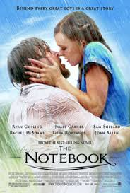

- Directors: Anthony Russo, Joe Russo
- Writers: Christopher Markus, Stephen McFeely
- Year: 2019
- Rating: 8.4
After the devastating events of Avengers: Infinity War (2018), the universe is in ruins. With the help of remaining allies, the Avengers assemble once more in order to reverse Thanos' actions and restore balance to the universe.

- Director: Todd Phillips
- Writers: Todd Phillips, Scott Silver
- Year: 2019
- Rating: 8.5
In Gotham City, mentally troubled comedian Arthur Fleck is disregarded and mistreated by society. He then embarks on a downward spiral of revolution and bloody crime. This path brings him face-to-face with his alter-ego: the Joker.

-

- Director: Nick Cassavetes
- Writers: Jeremy Leven, Jan Sardi
- Year: 2004
- Rating: 7.8
A poor yet passionate young man falls in love with a rich young woman, giving her a sense of freedom, but they are soon separated because of their social differences.
- Director: Frank Darabont
- Writers: Stephen King
- Year: 1994
- Rating: 9.3
Two imprisoned men bond over a number of years, finding solace and eventual redemption through acts of common decency.